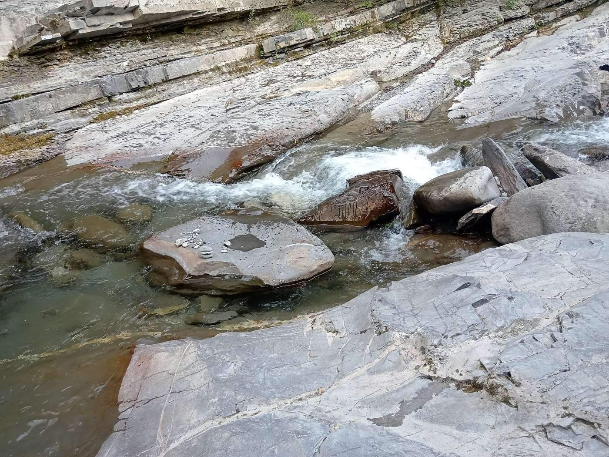
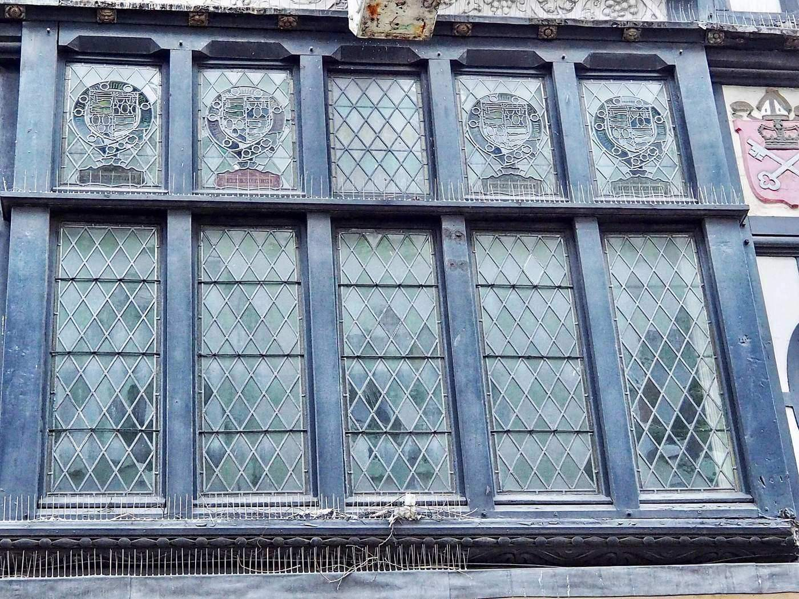

店のこと
六角レンチの部位の配置図
お店の詳しい情報は準備中です。ここでは、制作側が考えたデザインの考え方を紹介します。


制作側の連想
番号は、部位の番号
ホームの図にある1〜6の番号は、それぞれ六角レンチの部位の名前に対応します。六角レンチの部位を図にしたもので、制作側の連想です。お店の理念・由来とは無関係で、実際の工具の仕様を示すものでもありません。
1長い腕
握って回すときの持ち手になる、長いほうの辺。てこの長さをかせぐ部分。
2短い腕
もう一辺の、短いほうの辺。ねじの穴に差し込んで使うことが多い。
3曲がり部
二つの腕をつなぐ、L字の角の丸み。
4六角の断面
腕を輪切りにしたときに見える、六つの辺をもつ形。六角穴にはまる。
5ボールエンド
長い腕の先についた、丸みのある先端。斜めからでも差し込みやすい形。
6フラットエンド
短い腕の先を平らに切った先端。穴の底まで差し込んで回す。
写真(イメージ)
写真(イメージ)


写真はイメージです。お店のものではありません。